Project Summary¶
Problem Desctiption¶
The underlying objective is to predict the relevancy’s of the search query with various attributes of the search term provided by the user. The output search relevancy score should be in the range of (1,3).
Dataset¶
The data set of Home Depot Search Relevance has been obtained from Kaggle dataset repository (https://www.kaggle.com/c/home-depot-product-search-relevance/data) and it includes the following attribute fields:
- ID: a unique Id field which represents a (Search Term, Product ID) pair
- Product Unique ID: an Id for the products
- Product Title: the product title
- Product Description: Text description of the product (may contain HTML content)
- Search Term: Search query by users.
- Relevance: Average of the relevance ratings for a given Id
The files given in the dataset are listed below:
- train.csv: Training Data
- test.csv: Testing Data
- attributes.csv: The extended attributes of every product in the dataset
- product_descriptions.csv: All the attributes related to the query
This project is cleaning, analysing and visualizing the dataset.
Methodology¶
Data Exploration
A data exploratory analysis is performed on the dataset to look into the attributes of the dataset and explore the trends in the data.
The resultant output gives an overview of the statistics of product data and provides a frequency distribution on the attributes.
The python scripts used:
hd_dataMerge.py
hd_freqDist.py
Initial cleaning and processing of data
Initially the input data is cleaned and preprocessed before the analysis. This project uses the following techniques for cleaning the data:
- Stemming
- Find common words
- Find frequency of words
- Replace extra characters
- Substitution to search query terms
- Split two words
The python scripts used:
hd_ReadData.py
hd_Preprocessing.py
Analysis of data
This component applies Random Forest and Bagging Regression Techniques on the test and train input data to successfully predict the search relevancy scores.
The python scripts used:
hd_DataAnalysis.py
hd_Algorithm.py
Visualization
The python scripts used:
hd_visualization.py
This component generates five types of visualizations, given below:
Visualization Files generated by function ‘LineChart’:
LineChart - Search Relevancy VS Product Id
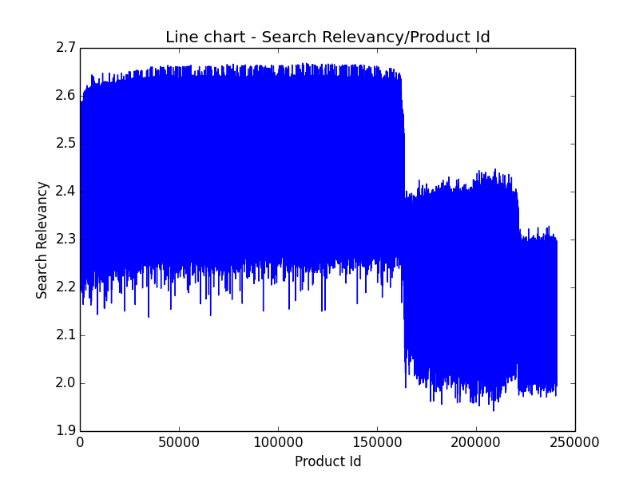LineChart - Product Id VS Search Relevancy
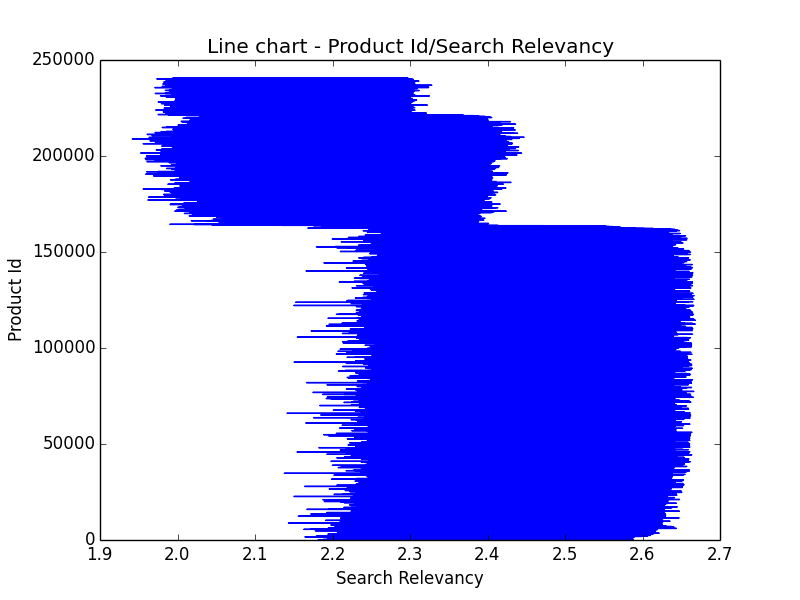LineChart - Relevancy Count VS Possible Relevancy
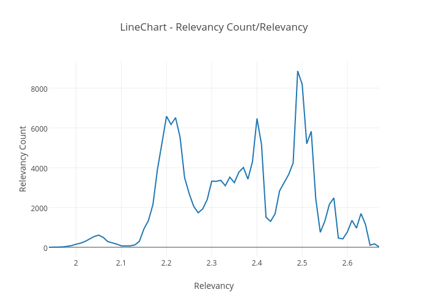Visualization Files generated by function ‘Histogram’:
Histogram - Frequency of Relevancies
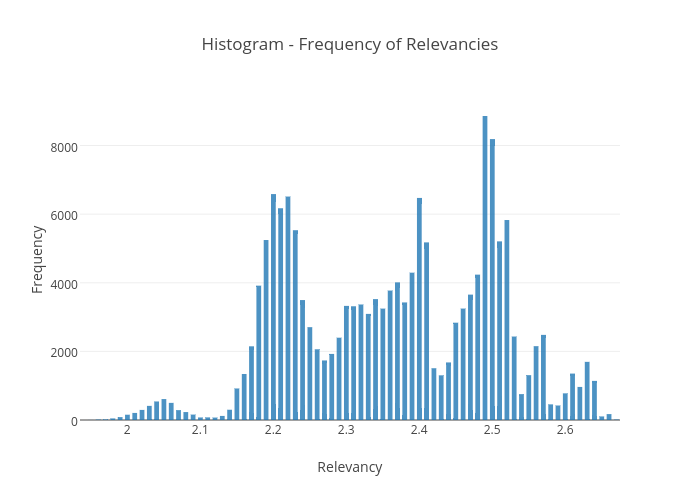Visualization Files generated by function ‘Wordcloud’:
WordCloud - Search Terms(in Train Data)
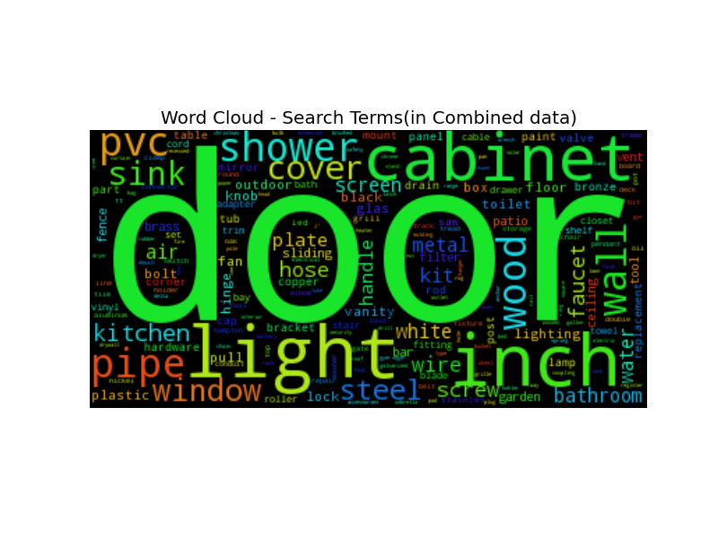WordCloud - Search Terms(in Test Data)
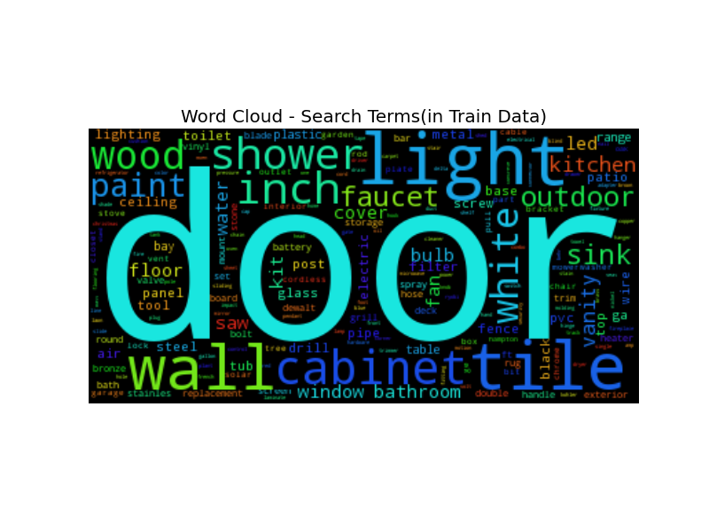WordCloud - Search Terms(in Combined data)
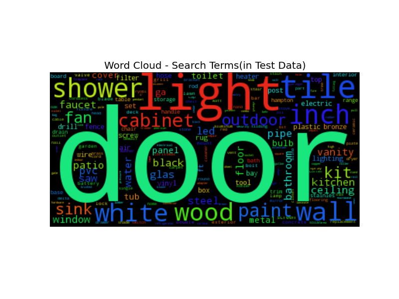Visualization Files generated by function ‘PieChart’:
Piechart - Relevancies - 2 Splits
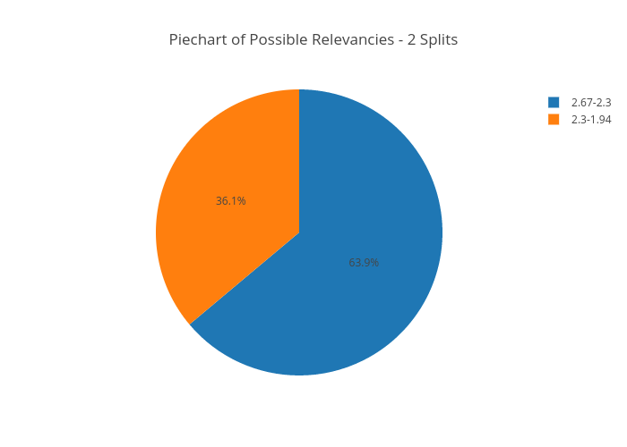Piechart - Relevancies - 4 Splits
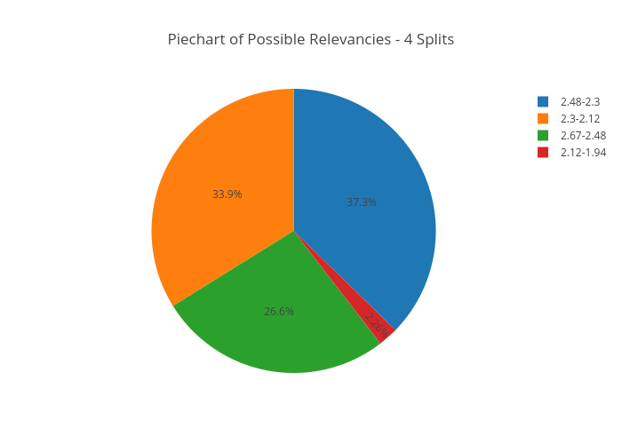Piechart - Relevancies - 8 Splits
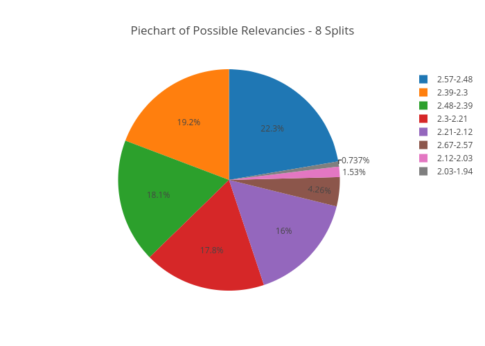Visualization Files generated by function ‘ScatterPlot’:
ScatterPlot - Count of All Relevancies
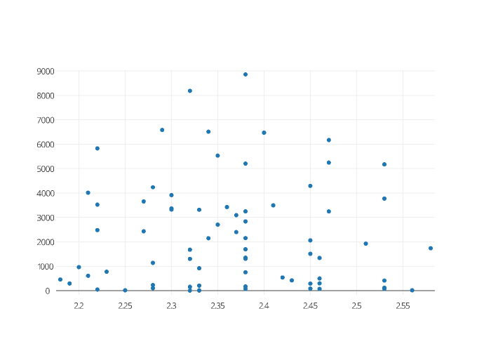
Code References¶
The project uses the Kaggle kernel mentioned below as a reference for it’s development.
https://www.kaggle.com/the1owl/home-depot-product-search-relevance/rf-mean-squared-error